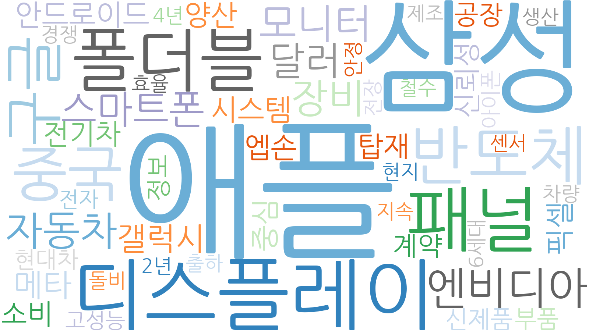
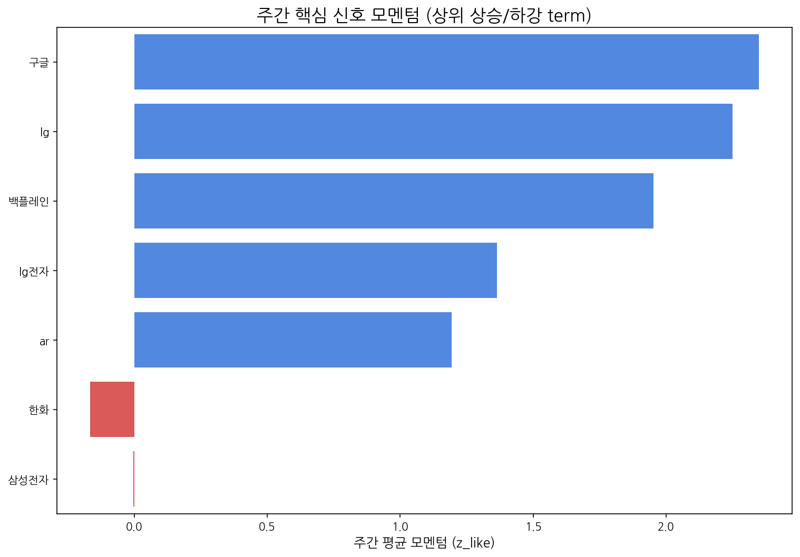

LLM 요약 생성 중 오류가 발생했습니다.
| 키워드 | 주간 누적 점수 |
|---|---|
| 애플 | 6.22022 |
| 삼성 | 3.56169 |
| 디스플레이 | 2.40286 |
| 패널 | 1.8599 |
| 폴더블 | 1.68872 |
| 반도체 | 1.4129 |
| 중국 | 1.17646 |
| 구글 | 1.13297 |
| 엔비디아 | 1.10644 |
| 모니터 | 0.924819 |

| 경쟁사 | 주간 총 언급량 | 주간 평균 모멘텀 |
|---|---|---|
| 삼성전자 | 55 | -0 |
| lg디스플레이 | 9 | 0.66 |
| boe | 3 | 0.71 |
| 삼성디스플레이 | 1 | 0.62 |
| csot | 1 | 0.62 |
| term | cur | z_like | total |
|---|---|---|---|
| 구글 | 6 | 2.348 | 19 |
| ar | 5 | 2 | 34 |
| 백플레인 | 4 | 1.953 | 4 |
| 패널 | 5 | 1.864 | 16 |
| 현대차 | 4 | 1.781 | 27 |
AI 기반 주요 신호 해석:
| 핵심 신호 | 주간 총 언급량 | 일별 모멘텀(z_like) 추이 |
|---|---|---|
| 삼성 | 73 | 0.6 → -1.0 → -1.3 → -0.8 → 5.3 → 2.7 |
| 삼성전자 | 55 | 1.1 → -1.8 → -1.3 → -1.4 → 2.5 → 0.9 |
| lg | 50 | 1.5 → -0.1 → 5.2 → 2.4 |
| lg전자 | 44 | 1.1 → -0.3 → -0.6 → 4.5 → 2.0 |
| oled | 36 | 1.6 → 0.1 → -0.6 → 0.3 → 2.0 → 1.7 |
